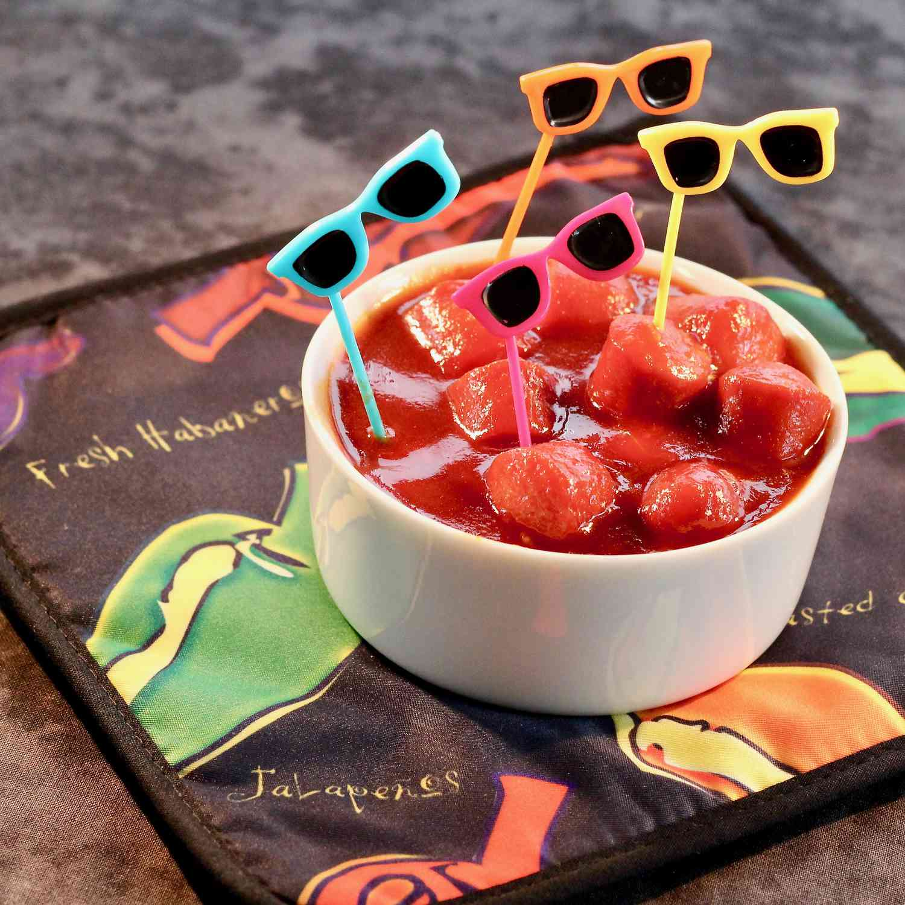

Saucy Sriracha Franks

Ingredients
- 1 cup ketchup
- 1/4 cup soy sauce
- 1/4 cup vinegar
- 3 tablespoons sriracha sauce
- 1 tablespoon brown sugar
- 1 teaspon sesame oil
- 1 teaspoon grated ginger root
- 1 clove garlic, crushed
- 1 (12 ounce) package all-beef franks, cut into 1-inch slices
- 1 box toothpicks
Steps
- Mix ketchup, soy sauce, vinegar, sriracha, brown sugar, sesame oil, ginger, and garlic in a saucepan
- Bring to a simmer over low heat
- Add franks and heat until warm for 5 minutes
- Serve with toothpicks